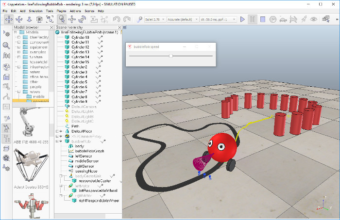
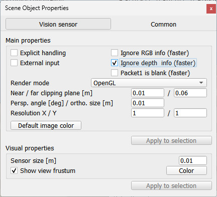
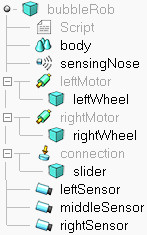

|
Line following BubbleRob tutorialIn this tutorial we aim at extending the functionality of BubbleRob to let it follow a line on the ground. Make sure you have fully read and understood the first BubbleRob tutorial. This tutorial is courtesy of Eric Rohmer. Load the scene of the first BubbleRob tutorial located in scenes/tutorials/BubbleRob. The scene file related to this tutorial is located in scenes/tutorials/LineFollowingBubbleRob. Following figure illustrates the simulation scene that we will design:  We first create the first of 3 vision sensors that we will attach to the bubbleRob object. Select [Add > Vision sensor > Orthogonal type]. Edit its properties, by double-clicking on the newly created vision sensor icon in the scene hierarchy, and change the parameters to reflect following dialog:  The vision sensor has to be facing the ground, so select it, and in the orientation dialog, on the orientation tab, set [180;0;0] for the Alpha-Beta-Gamma items. We have several possibilities to read a vision sensor. Since our vision sensor has just one pixel and operates in an easy way, we will simply query the average intensity value of the image read by our vision sensor. For more complex cases, we could have set-up a vision callback function. Now copy and paste the vision sensor twice, and adjust its names to leftSensor, middleSensor and rightSensor. Make bubbleRob their parent (i.e. attach them to the bubbleRob object). Your sensors should now look like this in the scene hierarchy:  Let's position the sensors correctly. For that use the position dialog, on the position tab, and set following absolute coordinates: Now let's modify the environment. We can remove a few cylinders in front of BubbleRob. Next, we will build the path that the robot will try to follow: click [Add > Path > Closed]. You have several possibilities to adjust the shape of the path, by manipulating its control points: you can delete or duplicate them, and you can shift/reorient them. Enable the object movement with the mouse, and adjust the path to your liking. Once you are satisfied with the geometry of the path (you can always modify it at a later stage), open the customization script attached to it and replace its content with: --lua
pathModel = require'models/path-2'
function sysCall_init()
local opt = {}
opt.closed = true
opt.hiddenDuringSim = false
opt.orientationMetric = 0.5
opt.forwardAndUpAxes = 'xz'
opt.upVector = nil -- {0.0, 0.0, 1.0}
opt.ctrlPoints = {}
opt.ctrlPoints.pointType = 'none'
opt.ctrlPoints.lineType = 'line'
opt.ctrlPoints.lineColor = Color'#00ffa0'
opt.ctrlPoints.showAxes = false
opt.ctrlPoints.duplicateThreshold = 0.01
opt.ctrlPoints.linearityTolerance = 0.01
opt.pathPoints = {}
opt.pathPoints.pointType = 'none'
opt.pathPoints.lineType = 'line'
opt.pathPoints.lineColor = Color'#00dd00'
opt.pathPoints.showAxes = false
opt.pathPoints.type = 'quadraticBezier'
opt.pathPoints.bezierSmoothing = 1.0
opt.pathPoints.samplingDistance = 0.05
opt.extrusion = {}
opt.extrusion.section = {-0.02, 0.001, 0.02, 0.001}
opt.extrusion.color = Color'#555555'
opt.extrusion.selectable = false
opt.extrusion.upVector = nil
opt.dummy = {}
opt.dummy.size = 0.01
opt.dummy.color = Color'#00ccff'
opt.dummy.visible = true
pathModel.update(opt)
end
Restart the customization script for the changes to take effect, then comment out or remove the line pathModel.update(opt). The last step is to adjust the controller of BubbleRob, so that it will also follow the black path. Open the simulation script attached to bubbleRob, and replace it with following code: --lua
function sysCall_init()
sim = require('sim-2')
simUI = require('simUI')
bubbleRobBase = sim.self:getObject('..')
leftMotor = sim.self:getObject("../leftMotor")
rightMotor = sim.self:getObject("../rightMotor")
noseSensor = sim.self:getObject("../sensingNose")
minMaxSpeed = {50 * math.pi / 180, 300 * math.pi / 180}
backUntilTime = -1 -- Tells whether bubbleRob is in forward or backward mode
floorSensors = {}
floorSensors[1] = sim.self:getObject("../leftSensor")
floorSensors[2] = sim.self:getObject("../middleSensor")
floorSensors[3] = sim.self:getObject("../rightSensor")
robotTrace = sim.scene:createObject({type = 'marker', ['marker.type'] = 'lines', cyclic = true, itemCnt = 200, itemColor = Color('#ffff00ff')})
-- Create the custom UI:
xml = '<ui title="' .. bubbleRobBase:getName({mode = 'shortPath'}) .. ' speed" closeable="false" resizeable="false" activate="false">'..[[
<hslider minimum="0" maximum="100" on-change="speedChange_callback" id="1"/>
<label text="" style="* {margin-left: 300px;}"/>
</ui>
]]
ui = simUI.create(xml)
speed = (minMaxSpeed[1] + minMaxSpeed[2]) * 0.5
simUI.setSliderValue(ui, 1, 100 * (speed - minMaxSpeed[1]) / (minMaxSpeed[2] - minMaxSpeed[1]))
prevPos = bubbleRobBase.worldPosition
end
function sysCall_sensing()
robotTrace:addItems(prevPos:horzcat(bubbleRobBase.worldPosition))
prevPos = bubbleRobBase.worldPosition
end
function speedChange_callback(ui, id, newVal)
speed = minMaxSpeed[1] + (minMaxSpeed[2] - minMaxSpeed[1]) * newVal / 100
end
function sysCall_actuation()
local result = noseSensor.detectedObject
if result then
backUntilTime = sim.scene.simulation.time + 4
end
-- read the line detection sensors:
sensorReading = {false, false, false}
for i = 1, 3, 1 do
local data = floorSensors[i].packet1
if #data > 0 then
sensorReading[i] = (data[11] < 0.5) -- data[11] is the average of intensity of the image
end
end
-- compute left and right velocities to follow the detected line:
rightV = speed
leftV = speed
if sensorReading[1] then
leftV = 0.03 * speed
end
if sensorReading[3] then
rightV = 0.03 * speed
end
if sensorReading[1] and sensorReading[3] then
backUntilTime = sim.scene.simulation.time + 2
end
if backUntilTime < sim.scene.simulation.time then
-- When in forward mode, we simply move forward at the desired speed
leftMotor.targetVelocity = leftV
rightMotor.targetVelocity = rightV
else
-- When in backward mode, we simply backup in a curve at reduced speed
leftMotor.targetVelocity = -speed / 2
rightMotor.targetVelocity = -speed / 8
end
end
function sysCall_cleanup()
simUI.destroy(ui)
end
|